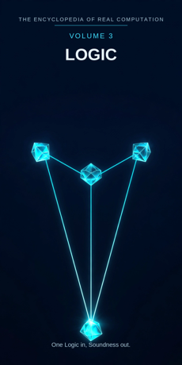

Chron.
The Encyclopedia of Real Computation

One Logic in, Soundness out.
Home domain: Meta
One Logic in, Soundness out.
◉ A Principle .... Logic ◎ B Purpose ...... Validity ◉·◉ A.A Alpha ...... the Logician ◉·◎ A.B Cross ...... the Syllogism △ X Primitive .... Premises ⚙ Y Protocol ..... Deduction ⬢ Z Product ...... the Conclusion ◐ i State ........ the Fallacy ⚖ j Condition .... Consistency ⊞ N Set .......... the Forms ◷ h Time ......... the Ages ▣ C Context ...... the Academy ▦ D Domain ....... the Canon ♥ E Emotion ...... Clarity ➤ F Intention .... Demonstration ↻ pi Cycle ........ the Debate ➔ phi Step ......... the Inference ⚄ e Probability .. Certainty • h-bar Planck ..... the Proposition
Σ sigma Summation .. the System
◈ gamma Scale ...... Rigor Δ delta Change ..... the Counterexample ⁂ sigma' Options ... the Paradoxes Ω Omega Answer ..... Soundness
Every volume of this encyclopedia does the same work. The Prologue figures the subject whole. Then come twenty-four chapters, one per term, each doing four jobs in plain English: what the term means, where it sits in the computation, how it works on the volume's one running example, and what breaks without it. Then the Data, whole. Then the Crossings. Then the Sum. The running example of this volume is the oldest argument in the field: all men are mortal, Socrates is a man, therefore Socrates is mortal - three short sentences that carry the whole discipline.
Logic: the study of valid reasoning - of what follows from what, and why. Validity: the property an argument has when its conclusion cannot fail if its premises hold.
◉ Logic. ◎ Validity = the root of Logic: aimed at itself, logic
asks when reasoning may be trusted. ◉·◉ the Logician: logic turned on itself becomes a person who checks. ◉·◎ the Syllogism: logic crossed with validity - the link that carries the crossing.
△ Premises = Logic parted over the Forms. ⚙ Deduction = the
function of the Premises, the working applied. ⬢ the Conclusion = Premises times Deduction, the product, once the Syllogism has carried it to Validity. ◐ the Fallacy = the root of negative Logic: reasoning that wears the shape of following and does not follow. ⚖ Consistency = the condition, element by element: logic stands while no contradiction stands in it. ⊞ the Forms = the set: Propositional, Predicate, Modal, Syllogistic. ◷ the Ages: logic comes down through time. ▣ the Academy: where logic stands.
▦ the Canon = the Forms crossed by the Study. ♥ Clarity = the
difference a landing makes. ➤ Demonstration = the intention that carries a context. ↻ the Debate: logic returns to its old ground in contest. ➔ the Inference: one step, drawn, stood on.
⚄ Certainty: the odds a conclusion carries - a valid deduction
from true premises sets them at full. • the Proposition: the least piece, one claim that can be true or false. Σ the System: all of logic, summed as one. ◈ Rigor: the scale of an argument. Δ the Counterexample: logic's own measure of change.
⁂ the Paradoxes: the spread of what reason generates and cannot
yet settle. Ω Soundness: the answer logic resolves into.
IF If Logic to Validity, then Premises & Deduction is the Conclusion, or the Fallacy while Consistency for the Forms, through the Ages, in the Academy, the Canon, Clarity, Demonstration, at the Debate by the Inference, with Certainty over the Proposition - sum the System, scale Rigor, change the Counterexample, options the Paradoxes - therefore Soundness.
Stands below, after the chapters, figured whole: the Forms crossed by the Study, sixteen cells, and the six contexts.
The seven laws, run on this seed. Pythagoras: Logic squared plus Validity squared overlays the Academy squared - the syllogism triangle checks in the Where, the If, and the Data identically. Law of cosines: the tilt between logic and validity is set by context - in the Academy the angle is exact, in the courtroom it widens, where persuasion bends it. Binomial: the middle term is the Syllogism, two times over - the premises shape the deduction, the deduction reshapes the premises. AM-GM: Validity is the geometric mean between Logic and the One. Log law: Rigor of the Conclusion is Rigor of the Premises plus Rigor of the Deduction - strictness adds where work multiplies. Complex modulus: the Fallacy is counted in the size of the system; logic is larger, not smaller, for having mapped its own errors. Triangle inequality: no route from Premises to Conclusion is shorter than Deduction; skip it and you hold a guess wearing a conclusion's clothes, filed in this volume under its shadow name.
Logic begins with the plainest units there are - single claims, true or false - and works them by a short list of moves anyone can learn: and, or, not, if, all, some. Its product is not the working but the conclusion that has been carried across a valid chain and can now be leaned on. The discipline is honest about its dark side in a way few fields match: it keeps a named catalogue of its own failures, the fallacies, and teaches them beside the successes, because an error with a name is an error that can be caught. It keeps its paradoxes in a labelled room, unsolved and on display. Its history debates: schools rise, systems are sharpened against each other, and the same three sentences about a man in Athens have been checked by beginners for twenty-three centuries. And its finish is soundness - the strongest word in this volume: an argument not only built to the rules but built from true premises, so the conclusion is not merely earned but so. One Logic in, Soundness out.
What it means. Logic is the study of what follows from what: the discipline that separates reasoning which carries truth from reasoning which only resembles carrying it. Its objects are not things but moves - the steps between claims - and yet every other field, every court, every machine that computes runs on its verdicts.
Where it sits. Logic is the Principle of this volume, the seed every other term grows from: Validity is its root, the Logician its self-product, the Syllogism its cross.
How it works. Take three sentences: all men are mortal; Socrates is a man; therefore Socrates is mortal. Everything in this volume is logic asking one question about them - does the third really follow from the first two? - and answering it completely, for these sentences and for every sentence shaped like them.
What breaks without it. Every other volume in this encyclopedia argues: mathematics proves, physics explains, law courts decide. Remove the Principle and the arguing fields keep their claims and lose the difference between a reason and a noise.
What it means. Validity is the property an argument has when the conclusion cannot be false if the premises are true. It is a claim about the chain, not about the world: a valid argument from false premises is valid still, and an invalid argument with a true conclusion is luck, not logic. Validity is what logic is for - the demand that following be shown, not felt.
Where it sits. Validity is the Purpose, B = the square root of A: logic aimed at itself extracts the standard its reasoning must meet. And B squared = A: reasoning fully validated settles back into logic itself.
How it works. The Socrates argument is valid because of its shape: whatever is true of all men is true of any man. Change the words - all cats are mammals, Felix is a cat - and the validity travels untouched. That shape-holding is validity at work.
What breaks without it. Without validity, reasoning is rhetoric and habit - persuasive sometimes, trustworthy never, and unable to say which arguments are which.
What it means. The logician is logic embodied: a checker in whom the field's standards have become reflexes - where the hidden assumption hides, which step is doing the smuggling, when "all" quietly became "most."
Where it sits. The Alpha, A times A: the field turned on itself. The same argument heard by a novice and by a logician differs the way a fact differs in any field - in the company it keeps: the counterexamples at its elbow, the forms it nearly fits, the forms it exactly fits.
How it works. Hand the Socrates argument to a beginner and he nods: of course Socrates is mortal. Hand it to a logician and she asks what the nod leaves out - the shape of the thing, why it must hold for any man, where its cousin arguments break. The holder is the difference.
What breaks without it. Unowned logic is a list of forms nobody can extend: conclusions without a checker are a coastline with no one sailing from it.
What it means. The syllogism is the interaction term: logic crossed with validity, an argument-shape laid between premises and conclusion. It is where the work happens - the middle term of the binomial, carrying force in both directions.
Where it sits. The Cross, A times B, counted twice: the premises shape the syllogism (different quarry, different form), and the syllogism reshapes the premises (half of all loose claims are tightened just by being fitted into one).
How it works. In the example, "man" is the middle term - it appears in both premises and vanishes from the conclusion, having done all the carrying. Mortal reaches Socrates only across it. Every syllogism has such a bridge; finding it is the cross at work.
What breaks without it. With either factor at zero - claims with no drive to connect them, or connecting-drive with no claims in hand - the product is zero and nothing follows from anything.
What it means. Premises are the primitive material: claims taken as given, one at a time, each able to be true or false. A premise makes no argument by itself; it is the clay. Logic parted over its forms arrives first as premises - statements, subjects and predicates, possibilities.
Where it sits. X = A times N: the Principle spread across the Set. Every form receives the principle as its own premises - propositional logic as whole claims, syllogistic logic as the two great givens and the man between them.
How it works. The example begins with two premises: all men are mortal, and Socrates is a man. Nothing has been concluded yet; two claims stand on the table, and the second is narrower than the first - which is exactly the setup the deduction needs.
What breaks without it. No primitives, no products: a field with nothing elementary to work has only conclusions, and conclusions cannot be checked from inside themselves.
What it means. Deduction is what may be done to premises: the short, public list of moves - join, split, deny, substitute, infer - the same for everyone, which is the whole point. A protocol that varies by person is not a protocol.
Where it sits. Y = f(X), with f the root of Validity: the working is governed by the purpose - moves are permitted because they preserve truth, not because they feel persuasive.
How it works. Apply the one move this example needs: what holds of all men holds of Socrates, because Socrates is a man. Mortality descends the middle term like a bucket down a well-chain. The working ran ahead of the conclusion, as good protocol should - the move was legal before anyone said the result out loud.
What breaks without it. Premises without a working stay inert: claims on a table nobody may touch. Deduction is the field's hands.
What it means. A conclusion is a claim that has been deduced: premises worked by deduction and carried across a syllogism, arriving as something the whole field may now stand on. Conclusions are logic's load-bearing walls - and its most recycled bricks, since each conclusion becomes a premise in the next argument.
Where it sits. Z = X times Y: the product, area-shaped - it reaches exactly as far as its factors reach, and it can always be factored back for audit: which premises, which moves, which shape.
How it works. The example's product is: Socrates is mortal. It sounds like nothing - and it is the first conclusion in the history of the field that students still derive for themselves, twenty-three centuries on, because its smallness is its lesson: truth, carried legally, across the smallest possible distance.
What breaks without it. Working that never sets into product is exercise, not logic. The conclusion is where effort becomes inheritance.
What it means. The fallacy is logic's shadow: reasoning that wears the shape of following and does not follow - the invalid leap, the smuggled assumption, the middle term that shifts its meaning mid-argument. Fallacies are not mere mistakes; they are mistakes with excellent costumes.
Where it sits. i = the root of negative A: the state of the principle itself, counted in the system's size by the modulus law. The shadow is not outside logic; cataloguing it is one of logic's own finished works.
How it works. Reverse the example: all men are mortal; Socrates is mortal; therefore Socrates is a man. It has the same words, the same rhythm - and it does not follow, since Socrates might be a dog. The costume is perfect; the step is not there. That almost-rightness is the shadow's whole danger, and its lesson.
What breaks without it. A logic that hid its fallacies would leave its students defenceless against every fluent fraud. Naming the shadow is what lets the field trust its light.
What it means. Consistency is the condition that no contradiction stands in the system: not "p" and "not-p" together, ever. From a contradiction, classically, anything at all can be deduced - which makes an inconsistent system not wrong but useless, a machine that prints every answer.
Where it sits. j, the Condition: the root taken element by element. Each argument stands while its premises can stand together; verification here is granular - this chain, these claims, checked for peace among themselves before they are checked against the world.
How it works. The example's premises keep the peace: nothing in "all men are mortal" quarrels with "Socrates is a man." Add "Socrates is immortal" and the set explodes - from the three, anything follows and nothing means. The condition held the example's whole meaning.
What breaks without it. Unstated inconsistency is a smuggled everything. The field that checks its conditions can be argued with; the field that skips the check can prove whatever it likes.
What it means. The forms are logic's divisions: Propositional (whole claims and their joinery), Predicate (subjects, predicates, and how much of each), Modal (the necessary and the possible), Syllogistic (the two-premise chain). Each form is the whole principle read in one direction.
Where it sits. N, the Set - the term everything is counted in: premises are A times N, the domain is N crossed by the Study, the sum runs over N. The set is complete as this volume defines it and open underneath; forms are still born (the logic of machines grew within living memory).
How it works. The example is syllogistic by birth, predicate by anatomy (a subject, a predicate, a quantity), propositional in its bones (three claims, joined). One argument, three forms, walked through like adjoining rooms - the set is a sorting, not a fence.
What breaks without it. Unsorted logic is a drawer of clever moves: each valid, none findable, each generation re-inventing the syllogism and mislaying it again.
What it means. Logic arrives through the ages or not at all: Aristotle's syllogisms, the medieval disputations, the nineteenth century's algebra of thought, the twentieth's formal systems. The field is a relay over twenty-three centuries, and its cargo, like mathematics', does not rot.
Where it sits. h, Time: the passage the whole figure moves through. A valid form does not expire with its century; it is re-checked by each age and arrives with its edge undulled - the nearest thing reason has to a permanent possession.
How it works. The Socrates argument was old when the medieval schoolmen made it their first exercise. They chanted it, varied it, broke it, repaired it - and handed it on so faithfully that a beginner today meets the identical three sentences.
What breaks without it. Logic reinvented each generation would be persuasion forever: the same fallacies re-believed, the same forms re-found and re-lost like a tide coming in over footprints.
What it means. The Academy is where logic stands: its base context, the standing-place of schools, seminars, and disputing floors from which its domain is read. Logic is the most portable of fields, and even it is homeless without a place that protects the slow work of checking.
Where it sits. C, the Context, first of the setting terms: contexts transform the domain (the table stands in the Data), and the difference a context makes is measured by Clarity, the next part's first term.
How it works. In the Academy, the Socrates argument is an exercise - three sentences on a board, handled gently. Carry it into a courtroom and it is a scaffold for evidence; into a machine and it is three lines of working code. The form never changed; its company did.
What breaks without it. Context-free logic can be done - a little of it, in treatises nobody teaches from. The field as a human enterprise stands in the Academy or nowhere.
What it means. The canon is logic's whole territory: the forms crossed by the study - every form in its four movements, from the question it asks to the teaching it hands on. The full table stands in the Data, sixteen cells, every one figured.
Where it sits. D = N crossed by R: the set by the study. A form becomes territory only when the study moves across it; the domain is a crossing, never a list.
How it works. Read the example's path through the table: it is asked in Syllogistic (the Middle Term), settled as its Figure, understood as the Chain, and handed on in the Drills every beginner still does. The territory is one land; the example has walked its roads.
What breaks without it. Forms without a domain are four solitudes, each re-deriving the others' results in private notation. The domain is the peace treaty and the road map in one.
What it means. Clarity is the difference an argument makes when it lands, measured the logician's way: the moment a muddle separates into premises over here, conclusion over there, and the one step between them standing in plain sight. Reasoners trust clarity as a signal, and they are right often enough that the signal is in the model.
Where it sits. E, Emotion: the difference between contexts, C1 minus C0. Before the deduction, the example's claims are a small pile of sayings; after it, the room has changed - and the size of the change is this term.
How it works. A student reads the three sentences and feels nothing much. Then the middle term is pointed out - "man," carrying mortality across - and the argument turns transparent, all at once, like a window wiped. That sudden see-through is clarity, felt, and it is why the example has been taught for two millennia.
What breaks without it. Two arguments can be equally valid and humanly unequal: the opaque one is believed on trust, the clear one is checked, remembered, and built on. A field that cannot feel the difference keeps both and slowly teaches neither.
What it means. Demonstration is logic's intention: the deliberate act of showing the chain, not merely asserting its end. To demonstrate is to lay each step out where a stranger can step on it. It is the most public move in this volume and the one that makes all the others checkable.
Where it sits. F, Intention: the operator that carries contexts - C1 = C0 + F. Apply demonstration and the same domain becomes the classroom's primer, the court's verdict-scaffold, the machine's verified program. What survives the carrying is the chain; what is shed is the asserter's authority.
How it works. The example survives because it is always demonstrated, never decreed: nobody has ever been asked to believe that Socrates is mortal on a teacher's say-so. Three sentences, one visible bridge - the demonstration is the whole heritage, re-performed in every generation.
What breaks without it. Undemonstrated logic dies with each argument: a thousand conclusions, each welded to its owner's credibility, none transferable. Demonstration is why one volume can serve all the others.
What it means. Logic does not proceed in a line; it debates. Thesis meets objection, objection meets repair, systems return to the same ground sharpened - the syllogism disputed in Athens, disputed in Baghdad, disputed in Paris, formalised in the modern age. The cycle is the field's gait.
Where it sits. pi, the Cycle: the loop the figure runs, turning by steps. The debate is also the field's memory policy - nothing is only settled once; it is re-argued at every level, and the re-arguing is where validity deepens into instinct.
How it works. The Socrates argument has been attacked from every side the ages could find: Is "man" the same word in both premises? What if there are no men? Each attack failed or improved the form, and the form that reaches this volume is the survivor of twenty-three centuries of organised disagreement.
What breaks without it. A linear logic would settle each thing once, at one depth, and the depths would never be tested against each other. The debate is the agreement machinery.
What it means. An inference is a single drawing of a conclusion from premises: one legal move, sized to a single stride. Logic climbs by inferences the way knowledge climbs by lessons - the step is a property of the climbing, not of the mountain.
Where it sits. phi, the Step: the advance at the cycle's turn. In the grammar, the cycle turns by the step - at the Debate by the Inference. Too small and the argument drowns in gravel; too large and the checker cannot follow, and an unfollowable step is a claim, not a step.
How it works. The example is nearly all step: one inference, Socrates is mortal, drawn once, by the one move the premises license. Longer proofs are this same stride repeated, each inference proved legal by the form behind it. The example is the atom of every argument ever built.
What breaks without it. Arguments delivered as single leaps would be believed or disbelieved whole, like prophecies. Inferences are how an argument stays checkable by strangers.
What it means. Certainty is the odds a claim carries, and logic grades them with unusual honesty: a conclusion deduced from true premises carries the maximum; a conclusion deduced from guessed premises carries exactly the premises' odds and not a drop more; an undeduced claim carries whatever its evidence gives it, printed plainly.
Where it sits. e, Probability: with Certainty over the Proposition - every point of the field carries its odds printed beside it. Deduction is the machine that transmits this term undiminished; the Paradoxes of Chapter 23 are where the transmission honestly jams.
How it works. Socrates is mortal with the certainty of the premises - no more, and the field insists on the "no more": the day a premise falls (all men, it turns out, except one), the conclusion's setting falls with it, publicly, by the same chain that raised it. Certainty here is inherited, never minted.
What breaks without it. Without printed odds, a field cannot distinguish its bedrock from its hopes, and builds on both with the same confidence until the hopes settle the account.
What it means. The proposition is the least piece of logic: one claim, stated so it can be true or false - "Socrates is a man." Below the proposition there is no reasoning: words alone assert nothing, and a cheer is not a claim. The proposition is the smallest thing the field can address.
Where it sits. h-bar, the Planck term: the smallest resolution of the figure. The Sum of this volume is taken at the proposition's grain - Omega's limit as the least piece shrinks: logic's total is defined over single claims, and pairs of claims, all the way down.
How it works. The example is built of exactly three propositions - no more were needed, none could be removed. Each is true or false on its own; the argument lives in their arrangement. The least piece, three times, carries the founding argument of the field: that economy is the proposition's whole job.
What breaks without it. No proposition, no premise: claims without a least unit blur into moods and slogans, which cannot be checked, combined, or contradicted - only repeated.
What it means. The system is logic summed: all the forms, all the rules of inference, read as one body with one standard. A rule anywhere must cohere everywhere; a contradiction admitted in a corner is a fire in the whole house. That total accountability is what the summation operates.
Where it sits. sigma, Summation: the total taken over the Set, whole, every form, none sampled. It is the inverse of the parting that made Premises - the field breathes out into arguments and in into one system.
How it works. The Socrates argument belongs to the system, not to its first teacher: predicate logic re-derived it, propositional logic re-checked it, and a contradiction anywhere in that chain would be everyone's emergency by morning. The sum is a discipline before it is a number.
What breaks without it. Unsummed logic is a federation of notations drifting apart - the historical state the modern system was built, painfully, to end.
What it means. Rigor is how strict an argument's checking is, in reach: how much it governs. Some checks catch a slipped word; the rigorous ones catch a slipped quantifier in a proof a thousand pages long. Rigor is the scale that tells checking apart from glancing, and it is a measure, not a ranking of worth: the loosely-held true thing outranks the rigorously-held false one at every setting.
Where it sits. gamma, Scale: the translator of the figure. By the log law, the rigor of a chain is the sum of the rigors of its links - the conclusion's strictness equals the premises' care plus the deduction's care, which is why careful working on plain claims gives arguments out of proportion to both.
How it works. Three short sentences - and the example has been checked at maximum rigor for twenty-three centuries: every word weighed, every scope tested, every cousin-form tried and filed. Rigor: total. Inputs: a schoolboy's exercise. The disproportion is the term at work.
What breaks without it. Read at one magnification, the field cannot tell its pebbles from its mountain ranges, and sends its students to polish both with equal reverence.
What it means. The counterexample is logic's own measure of change: a single case, produced in the open, that breaks a claimed rule - one black swan against "all swans are white." It earns its place as this volume's delta twice over: it is the field's change-operator, and it is the tool the field hands every other volume for changing their minds legally.
Where it sits. delta, Change: applied in the closing run after the sum and the scale are known - change read in full view of the whole. In the field itself, delta is revision: logic changed its foundations, more than once, when a counterexample walked through a wall everyone thought was load-bearing - and rebuilt stronger.
How it works. Aim the tool at the example's shadow-cousin: "all mortals are men; Socrates is mortal; therefore a man." One counterexample - a mortal dog - and the claimed form collapses in public, and the true form stands next to it, unchanged. That is delta: the field correcting itself with a single instance.
What breaks without it. A logic without its change-term describes a frozen reason: forms without failures, truths without tests - and lends nothing to the volumes that must change their minds in a moving world.
What it means. The paradoxes are logic's open spread: arguments built by the rules whose conclusions reason cannot accept and cannot refuse - the liar who says "this sentence is false," the barber who shaves all who do not shave themselves. They are printed in this volume as options, not results: the spread of what the field may do next.
Where it sits. sigma-prime, the Options: last before the Answer, by the book's discipline. No answer in this encyclopedia is read until its spread has been shown; a system printed without its neighbouring paradoxes looks more finished than the field is.
How it works. The example's family keeps its own shelf of open and settled: whether "all" may range over empty sets troubled the medievals standing right beside the settled Socrates. The liar sentence is the same machinery, premises and deduction intact, arriving somewhere reason cannot live. Settled and open stand side by side, honestly labelled.
What breaks without it. Hide the spread and the field presents itself as finished - a museum where a workshop should be. The paradoxes are logic's capital: the named shape of its next century.
What it means. Soundness is what logic resolves into: an argument valid in shape and true in premises, so the conclusion is not merely earned but so. It is the strongest finish any argument can have, and the rarest - validity alone is common; soundness requires the world to cooperate with the reasoning.
Where it sits. Omega, the Answer: the limit of the whole figure, and its door back - soundness shows the next paradox (Chapter 23 keeps them ready), the paradox roots the next logic. The volume closes where the field reopens.
How it works. The example is sound, completely: its shape is valid, its premises are true - men are mortal, and there was a man. From that one settled point, courts reason, machines compute, and the next volume's physics dares to explain. A knower in this answer is not finished; she is equipped - including with a lit map of what the field cannot settle.
What breaks without it. Without a resolution, the computation turns and never lands: premises gathered, deductions run, forms polished - and no point at which the field may say "this much follows, from this much truth" and build. One Logic in, Soundness out.
The Study runs in four movements: the QUESTION the form asks, the FACT it settles, the UNDERSTANDING it reaches, the TEACHING it hands on.
PROPOSITIONAL . Question: the Compound - Fact: the Truth Table - Understanding: Combination - Teaching: the Tables
PREDICATE ..... Question: the Subject - Fact: the Instance -
Understanding: Scope - Teaching: the Examples
MODAL ......... Question: the Possible - Fact: the Necessity -
Understanding: Contingency - Teaching: the Cases SYLLOGISTIC ... Question: the Middle Term - Fact: the Figure - Understanding: the Chain - Teaching: the Drills
THE ACADEMY (base) .... Emotion Clarity, Intention Demonstration
gives THE CANON.
THE SCHOOLROOM ........ Emotion Patience, Intention Teaching
gives THE PRIMER.
THE COURTROOM ......... Emotion Gravity, Intention Advocacy
gives THE VERDICT.
THE PRESS ............. Emotion Urgency, Intention Publication
gives THE EDITORIAL.
THE MACHINE ........... Emotion Exactness, Intention Programming
gives THE CIRCUIT.
THE WORLD ............. Emotion Fairness, Intention Deliberation
gives THE COMMON REASON.
This volume's roads to its siblings. To VOLUME 1: the grammar of every computation in this encyclopedia is stated in the Book's own terms, and this volume is where that grammar is audited. To VOLUME 2 (Mathematics): proof, that volume's Purpose, is this volume's whole subject - mathematics borrows validity at every step and repays it in examples. To VOLUME 13 (Philosophy): logic stands there as one branch among six, and borrows its hardest questions back. To VOLUME 14 (Language): every premise is first a sentence; meaning is checked there, following is checked here. Every term of this volume holds an address on the great grid; the index of them stands in Volume 18.
THE TALLY LANE: 4 forms - 16 domain cells - 6 contexts - 24 chapters - 1 running example, settled entire. THE SIGMA LANE: read whole, the volume sums to +1: one logic, entire, its shadow counted and its spread shown.
ITS OPEN QUESTIONS (sigma-prime, carried to Volume 18): the liar paradox - whether "all" may range over nothing - whether any system of logic can certify its own soundness from inside - which the undecidable results of Volume 2 already press upon: not from inside, and knowing that is part of its soundness.
One Logic in, Soundness out.
ADDRESS INDEX: this volume's terms stand at the Meta home domain of the great grid; full addresses in Volume 18. GLOSSARY: syllogism - a two-premise argument whose middle term carries the conclusion. fallacy - reasoning that wears the shape of following and does not follow. soundness - validity with true premises. proposition - one claim, true or false. ICON TABLE: stands at the front of this volume, and of every volume, identical.